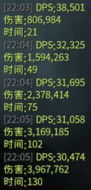
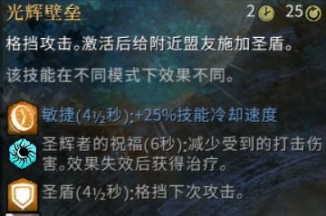
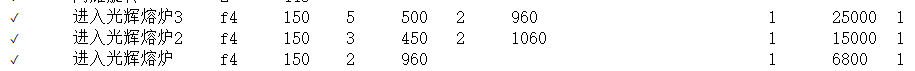
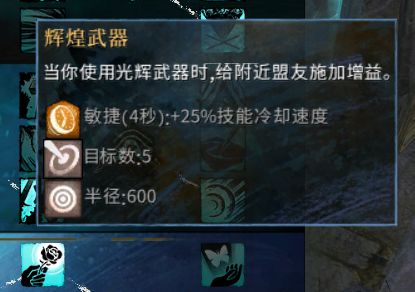
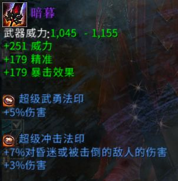
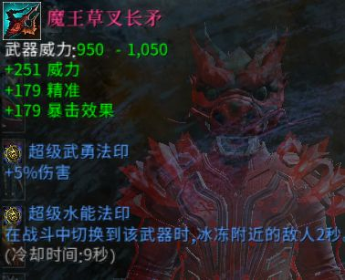
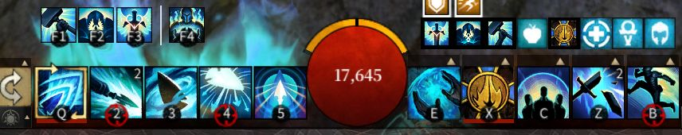
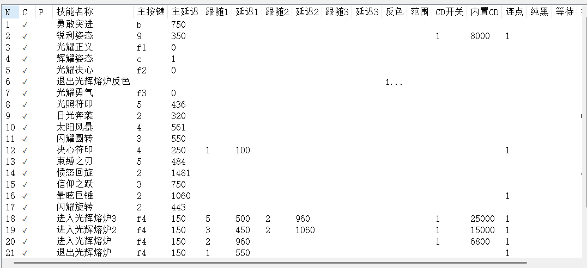
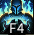
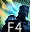

大剑、长矛 圣辉者 碎层专用 可输出可敏 好玩
勇敢突进，锐利姿态，光耀正义，辉耀姿态，光耀决心|锐利姿态，辉耀姿态，退出光辉熔炉反色=勇敢突进，光耀正义，光耀正义>4000=光耀决心，光耀决心>4000=光耀勇气，光照符印，日光奔袭，太阳风暴，闪耀圆转，决心符印，束缚之刃，愤怒回旋，信仰之跃，晕眩巨锤，闪耀旋转，进入光辉熔炉3，进入光辉熔炉2，进入光辉熔炉，退出光辉熔炉，日光奔袭>>2000=矛切剑，愤怒回旋>>2000=剑切矛，普攻||
勇敢突进,b,750|锐利姿态,9,350,,,,,,,,,,,,,,,,,触发,1,8000,1|光耀正义,f1|辉耀姿态,c,1|光耀决心,f2|退出光辉熔炉反色,,,,,,,,,ifnot|光耀勇气,f3|光照符印,5,436|日光奔袭,2,320,,,,,,,,,,,,,,,,,触发,0,,0,,,6000|太阳风暴,4,561|闪耀圆转,3,550|决心符印,4,250,1,100,,,,,,,,,,,,,,,触发,0,,1|束缚之刃,5,484|愤怒回旋,2,1481,,,,,,,,,,,,,,,,,触发,0,,0,,,4600|信仰之跃,3,750|晕眩巨锤,2,1060,,,,,,,,,,,,,,,,,触发,0,,1|闪耀旋转,2,443|进入光辉熔炉3,f4,150,5,500,2,960,,,,,,,,,,,,,触发,1,25000,1|进入光辉熔炉2,f4,150,3,450,2,1060,,,,,,,,,,,,,触发,1,15000,1|进入光辉熔炉,f4,150,2,960,,,,,,,,,,,,,,,触发,1,6800,1|退出光辉熔炉,f4,150,1,550,,,,,,,,,,,,,,,触发,0,,1|矛切剑,`,120,4,350|剑切矛,`,120,2,350|普攻,1
[&DQEuNSo6US8mDwMBXR14AVYdBAH+ADEBZx2JEgAAAAAAAAAAAAAAAAAAAAACMgAJAQA=]
狂战+巨龙 猎龙符文，100%暴击就行，武器 长矛 武勇、流水 大剑 武勇气、冲击 克达。这次写的循环有参考意义，稍后会讲。

职业砍的太狠，去年视频的38K完全实现不了，差的太多，更换了一套循环，主要用于碎层跟日常。
无灌注，1蛋糕，输出装下。
这套循环主要针对日常副本，提供辅助治疗，敏捷，以及圣盾等功能。

F4-5，提供圣盾
在循环中，你会看到 进入光辉熔炉3，进入光辉熔炉2，进入光辉熔炉， 这个循环3个取色都是F4。

熔炉3=进入熔炉后，马上按5+2，内置25秒，表示25秒的F4-5 cd。
熔炉2=进入熔炉后，马上按3+2，内置15秒。
最后才是正常的熔炉2，然后退出。
因为采用的是优先级，所以熔炉3释放完后，熔炉2-3都不会触发，而是直接触发后面的退出，同时内置cd起到了作用，没到时间就不会触发。
通过这个方法时间每隔X秒执行一次内部技能。

如果你需要敏捷，更换特性后，在狂战套的基础，更换2个饰品为神谕者，基本能满足99%的敏捷，不过建议项链也换成神谕，在此循环基础可实现>100%敏捷覆盖。


武器 武勇+冲击就行，水能可自行测试。

长矛状态下起手，不用猴戏。

总结，在机场很丝滑，光辉武器，全部采用的是连点方案，不需要识别颜色，确保快速触发。
通用技能方面可自行替换，优化了2天，实在提升不了了。
全局0.9
评论列表（16）
为何第一轮进入熔炉其他技能放完后后 就一直1111不再退出了？ 反色的也都点了
@知命 而且 F3一直没有触发 用的最新版
@知命 退出熔炉这个技能取色不对，换个位置
m佬。这个闪耀旋转是哪个技能
@小嘟嘟 熔炉内的技能
还是M大佬分享的容易上手，技能简单明子不用去猜武器多少是什么技能
进入光辉熔炉3，进入光辉熔炉2，进入光辉熔炉全是取这个吗？

@小龙龙 是 都取这里
退出熔炉反色是取这个吗？M佬

@小龙龙 取f4，没有进入熔炉的时候，在勾选反色。
为什么一启动就掉线
@红红的白开水 置顶文章 今日更新
狂战+巨龙怎么能做到百暴？。。。。传刺客才行额。
@不落地的枫叶 光辉线+25%暴击
优秀
高产！